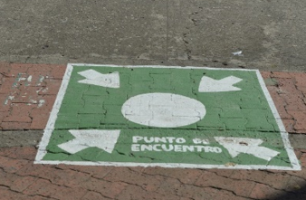
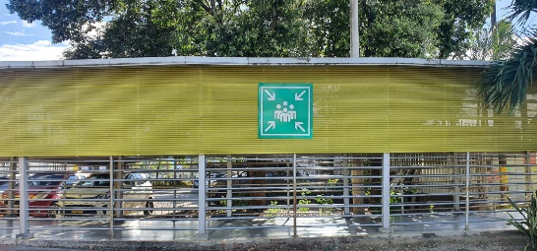
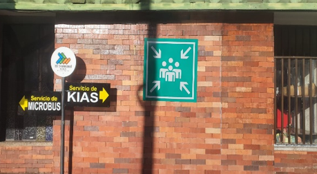
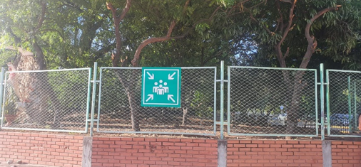

🆘 Introducción a Emergencias
Las emergencias son situaciones inesperadas que pueden poner en riesgo la vida, la salud, los bienes o el entorno. Conocer cómo actuar frente a ellas es fundamental para reducir sus consecuencias y proteger a todas las personas involucradas.
En el entorno laboral, cada trabajador debe mantener la calma, seguir los protocolos de emergencia y acatar las instrucciones del personal encargado. Una respuesta rápida, organizada y segura puede marcar la diferencia ante cualquier situación crítica.
📘 ¿Qué son los PONS?
Los Procedimientos Operativos Normalizados (PONS) son documentos que describen de forma clara, ordenada y secuencial cómo deben ejecutarse las tareas o procesos dentro de la organización. Su finalidad es garantizar la calidad, la seguridad y la eficiencia de las operaciones, reduciendo errores y promoviendo un ambiente laboral seguro.
Aplicar los PONS asegura que todos los colaboradores sigan las mismas pautas, permitiendo mantener la uniformidad en los resultados y el cumplimiento de los requisitos legales y normativos.
🚒 Brigadas de Emergencia
Es el grupo de trabajo conformado por empleados voluntarios, distribuidos estratégicamente en los diferentes niveles y turnos de trabajo, quienes reciben capacitación en primeros auxilios, técnicas bomberiles, salvamento y rescate. Además, tienen entrenamiento permanente y cuentan con la coordinación de empleados. Son quienes llevan a cabo las acciones operativas en caso de emergencia.
🚨 Qué hacer en caso de un accidente laboral o incendio
🩹 Accidente Laboral
- Detener labores inmediatamente.
- Suspender la operación de equipos y herramientas involucradas en el accidente.
- Prestar los primeros auxilios al lesionado.
- Informar al responsable del área (supervisor, operador o HSEQ).
- Si es necesario, trasladar al lesionado a la IPS más cercana.
- Reportar e investigar el accidente.
🔥 Incendio
- Analizar el tipo de incendio (Clase A: papel, madera; Clase B: gasolina; Clase C: eléctrico).
- Evaluar si puede ser controlado de forma segura.
- Usar agua, tierra o extintor multipropósito (ABC) según el tipo de fuego.
- Si no puede controlarse, evacuar el área y dirigirse al punto de encuentro más cercano.
- Reportar e investigar las causas del incendio.
- Implementar acciones correctivas para evitar su repetición.
🏃♂️ Alarmas, Puntos de Encuentro y Protocolos de Accesibilidad
En caso de emergencia, todas las personas deben seguir los protocolos establecidos para garantizar una evacuación rápida, segura y ordenada.
🔔 Alarmas
- Sonido intermitente — Alerta: inspección preventiva.
- Sonido continuo — Evacuación inmediata: abandonar el área.
📍 Puntos de Encuentro
- 1. Entrada oficinas administrativas, módulo Centenario.

- 2. Plataforma de abordaje, módulo Centenario.

- 3. Entrada principal del módulo Regional.

- 4. Zona norte (Propiedad Horizontal).
